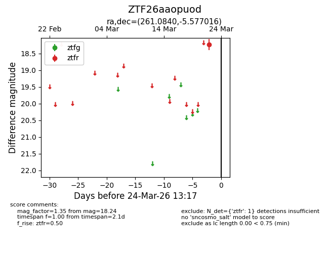
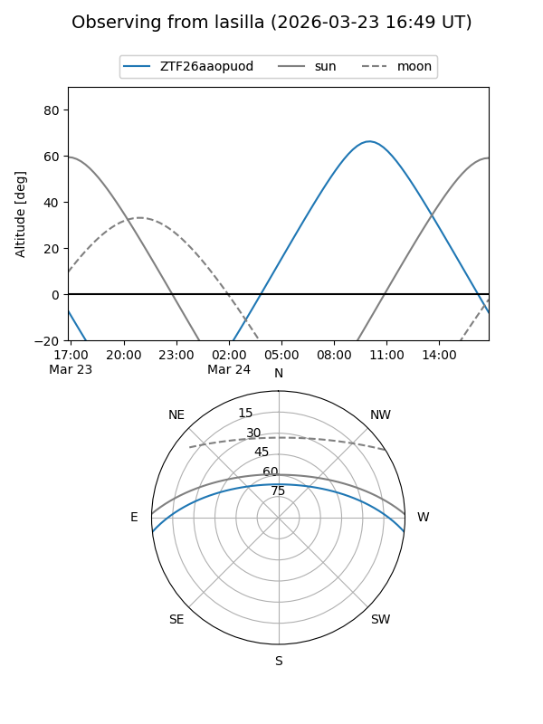
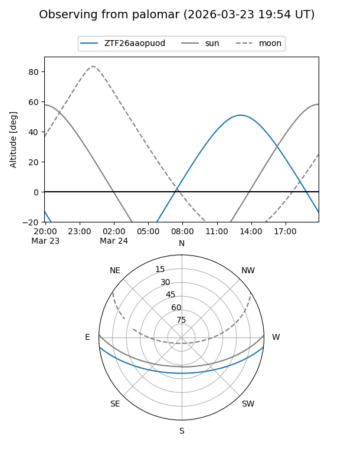

ZTF26aaopuod
Target ZTF26aaopuod at 2026-03-24 13:20
Aliases and brokers:
FINK: link
Lasair: link
ALeRCE: link
alt names
ZTF26aaopuod (ztf,fink_ztf)
Coordinates:
equatorial (ra, dec) = 261.0840,-5.57702
equatorial (HMS+DMS) = 17:24:20.16,-05:34:37.26
galactic (l, b) = (17.5165,+16.51595)
Flags:
Photometry:
last ztfr=18.24
1 ztfr detections
Lightcurve

Visibility


Additional plots